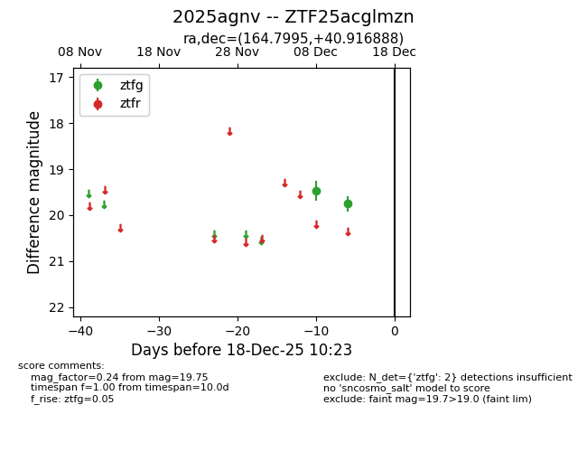
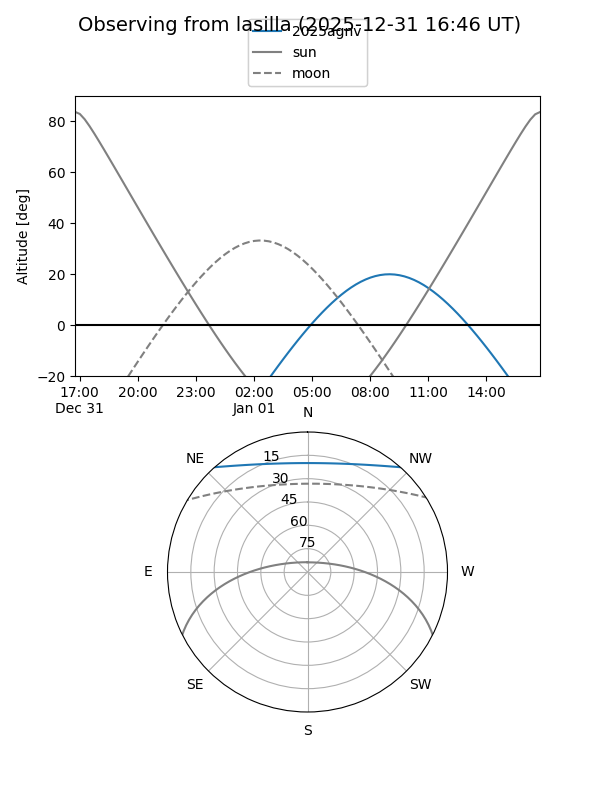
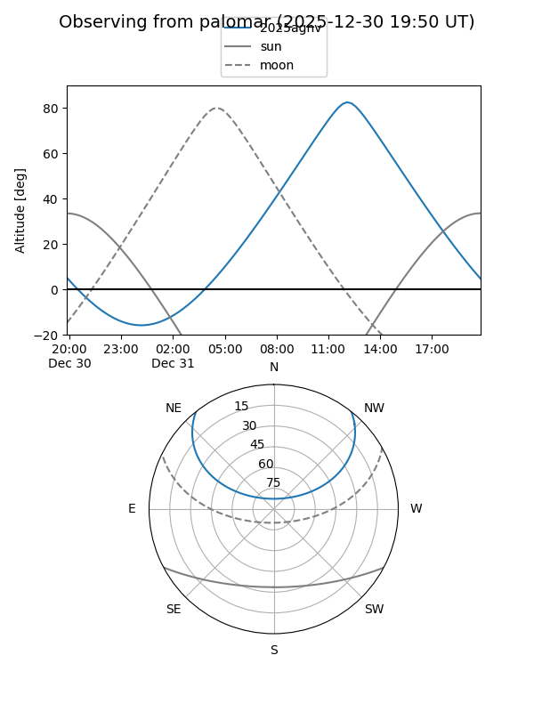

2025agnv
Target 2025agnv at 2025-12-31 16:59
Aliases and brokers:
FINK:
Lasair:
ALeRCE:
TNS:
YSE:
alt names
ZTF25acglmzn (ztf,fink_ztf)
2025agnv (tns,yse)
Coordinates:
equatorial (ra, dec) = 164.7995,+40.91689
equatorial (HMS+DMS) = 10:59:11.88,+40:55:00.80
galactic (l, b) = (174.8192,+63.14208)
Flags:
Photometry:
last ztfg=19.75
2 ztfg detections
Lightcurve

Visibility


Additional plots